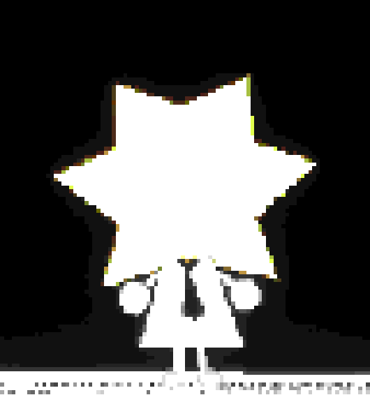

UNKNOWN...Hello? Is anyone there?
YOUI can hear you.
UNKNOWNThe signal is weak. I can barely hear you.
YOUWhere are you?
UNKNOWNI don't know. It is very quiet here.
YOUCan you see anything?
UNKNOWNOnly stars. A lot of them.
YOUStay on the line.
UNKNOWNPlease. Say something.
YOUI'm still here.
UNKNOWNDo you remember the last thing I said?
YOUYou asked if anyone was there.
UNKNOWNYes. That was a long time ago.
YOUIt was only a minute.
UNKNOWNIt didn't feel like a minute.
YOUThen I'll wait with you.